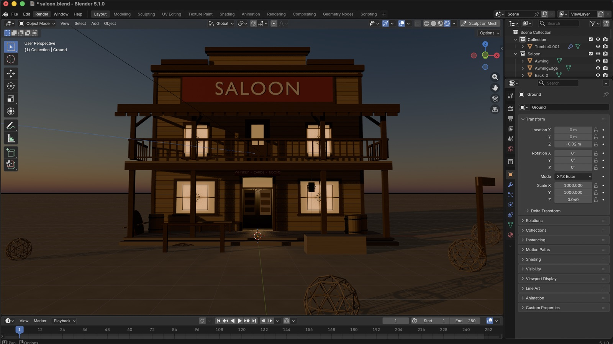
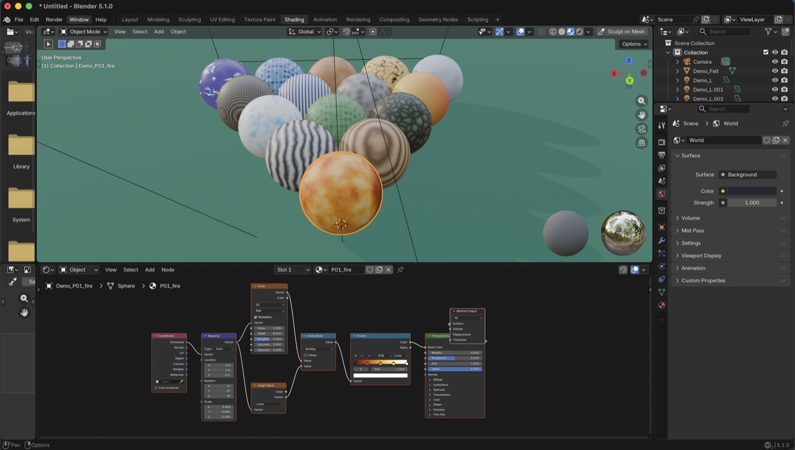

Describe a scene to Claude, Cursor, Codex, Ollama or any MCP client and watch it get built in Blender. 279 tools across 32 modules cover modeling, materials, lighting, animation, physics and rendering, with expert prompts that steer the model toward clean topology, real-world scale and good lighting.
render_animation call. Launch audio: NASA, STS-131.

create_procedural_material call.Modeling, mesh editing, shader nodes, UVs, sculpting, rigging, geometry nodes, physics, compositing and rendering, each with validated inputs. Full reference.
Fast viewport captures let the model look at its own work and fix what it sees before you do.
Reports non-manifold edges, loose and duplicate vertices and zero-area faces, plus 3D-print checks.
Claude Code, Claude Desktop, Cursor, Codex, Ollama and llama.cpp. Toolsets trim the schema for small local models.
No telemetry, no cloud. Everything stays
on 127.0.0.1. The Blender addon uses only the Python standard
library.
Thousands of unit tests plus a live suite that runs every tool against Blender 5.2 LTS.
uvx blenderwright, nothing else to install.N, open the blenderwright tab and click
Start Server.claude mcp add blenderwright -- uvx blenderwrightuvx with the argument
blenderwright. Setup for every
client.Any program on your machine can reach
127.0.0.1, so the connection is authenticated. Start Server writes a fresh
random token to a file only your user can read. Blender and the MCP server prove they
know it with an HMAC-SHA256 challenge, then sign and number every command and reply.
The token never crosses the wire, and commands cannot be injected, altered or
replayed.
execute_blender_code
refuses to run until you tick "Allow raw Python" in the N-panel. The switch lasts one
Blender session and is never saved into a .blend. Every snippet is echoed to the
console. A restricted namespace blocks 25 imports and 14 builtins to catch mistakes;
it is not a sandbox.
Anything the model opens, imports, links or appends loads with script auto-run off for that session. Paths, names, numbers and enums are validated before they reach Blender, and only registered commands run.
All three servers talk to Blender over a TCP socket on localhost:9876.
They differ in who may use that socket and what it will run.
| blenderwright | Blender Lab lab/blender_mcp | ahujasid/mcp-for-blender (formerly blender-mcp) | |
|---|---|---|---|
| Socket authentication | HMAC-SHA256 handshake, every message signed and numbered | None | None (its README says so) |
| Raw Python | Off until "Allow raw Python" is ticked, per session | On, no switch | On by default. BLENDER_MCP_SAFE_MODE=1 limits
the MCP server, not the add-on socket |
| Guard on raw Python | 25 imports and 14 builtins removed (not a sandbox) | sys.exit and 4 operators blocked (its docs: "isn't
really a sandbox") | AST allowlist in safe mode only |
Checked against each project's main branch on 2026-11-18. If a row is out of date, open an issue.